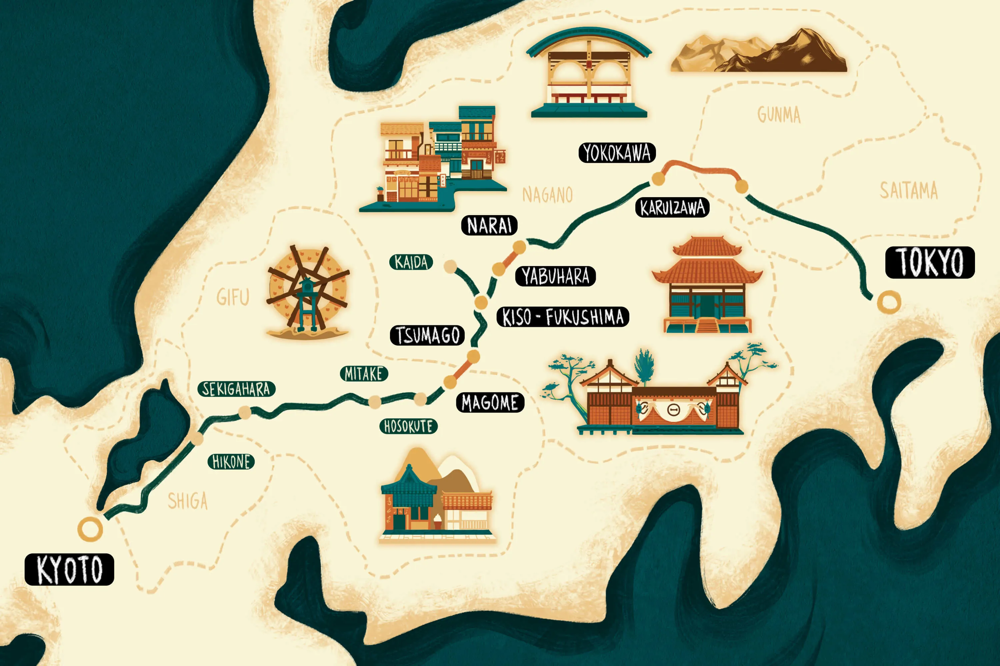
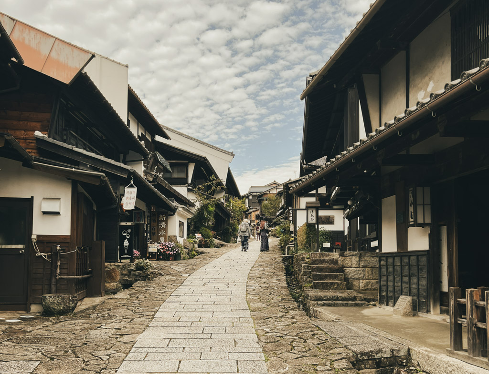

A brief history of the Nakasendo
The Nakasendo Trail, spanning over 330 miles (530 kilometers), dates back to the 1600s when it was established as a trade route connecting Kyoto and Edo (modern-day Tokyo). This inland path wound through Nagano's mountains, providing an alternative to the coastal Tokaido route. It played a significant role during the Edo period (1603-1868), facilitating the movement of goods, culture, and people. The trail was traveled by a diverse range of people, including monks, merchants, samurai, and even royal princesses. These travelers would rest at one of the 69 shukuba (post towns) along the route, which offered lodging, food, and services. Preservation and Modern-Day Hiking Although much of the original Nakasendo Trail has been overlaid with modern roads, significant segments remain intact, particularly in the Kiso Valley. Here, you can find remnants of the trail's original ishidatami (cobblestones) amid the sloping woodlands between Magome and Tsumago. These two post towns have preserved their 17th-century appearance with low-roofed timber buildings and wooden balconies, offering a glimpse into Japan's past.
When to hike
The Nakasendo Trail can be hiked year-round, though each season offers a different experience:
- Spring (April/May): Mild temperatures and blooming cherry blossoms make this an ideal time to hike.
- Summer: Hotter, more humid conditions, with a higher chance of rain and typhoons, may make the hike more challenging.
- Fall (October/November): Comfortable weather and stunning autumn foliage enhance the trail's beauty.
- Winter: The trail can be picturesque under snow, but hikers need to be well-prepared for cold temperatures and icy conditions.
The Kiso Valley portion of the Nakasendo Trail, despite its popularity, provides a tranquil escape from the hustle and bustle of urban areas, particularly during peak travel seasons or holiday weekends. Staying overnight in a local ryokan in one of the charming post towns is highly recommended. These traditional inns offer a unique opportunity to immerse yourself in the rich history and cultural heritage of rural Japan, providing a truly unforgettable experience.
How to get there
You have several possible ways to start your hike with the most popular way is to start either at the post town of Magome or Narai. The latter is the end point if starting in Magome. Both towns are easily accessed if you travel from Tokyo or Kyoto.
Starting in Magome
Magome is an ideal starting point for exploring the Nakasendo Trail. This picturesque, tranquil post town is renowned for its well-preserved Edo-era buildings and stunning views of the Kiso Valley. Situated at an altitude of 1985 feet (600 meters), Magome's mountainside location allows travelers to acclimate before beginning their hike.
Traveling to Magome from Tokyo
If you're traveling from Tokyo, take the shinkansen (bullet train) west to Nagoya Station - this journey takes approx. 1 hour 45 minutes. At Nagoya, you'll transfer to the Limited Express train headed north to Nakatsugawa Station in the Kiso Valley (approx. 1 hour). At Nakatsugawa you will find the local bus takes you to Magome in ca 25 minutes. Please note that public transport in Japan is still cash-dependant! Keep your Yen coins close by. If you're traveling with a lot of luggage, we suggest using Japan's wonderful luggage-forwarding service to make your travel that much easier.
Traveling to Magome from Kyoto
From Kyoto, board the shinkansen to Nagoya Station, which takes about 35 minutes, then transfer to the Limited Express "Shinano" train northwards to Nakatsugawa Station (approx 1 hour). On arrival, there are local buses that connect to Magome, around 25 minutes away.
Starting in Narai
Once the official midway point of the entire Nakasendo Way, the post town of Narai has a wealthy past, still evident in the historic buildings lining its main street. Starting your hike here is a great way to transport yourself back in time amidst restored wooden houses and traditional details.
Traveling to Narai from Tokyo
From Tokyo, take the shinkansen to Nagoya Station, where you can catch the JR Shinano Express train to Kiso-Fukushima Station which takes 2.5 hours. From there, change to the local JR Chuo line to Narai Station (approx 20 mins).
Traveling to Narai from Kyoto
If you're coming from Kyoto, the above route is virtually the same. Take the shinkansen from Kyoto to Nagoya, then transfer to the Shinano Express train as far as Kiso-Fukushima Station. Transfer to the local train until you reach Narai Station. In total, the journey takes about three hours.